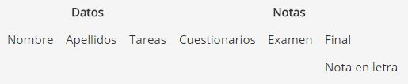
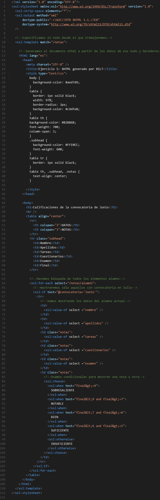
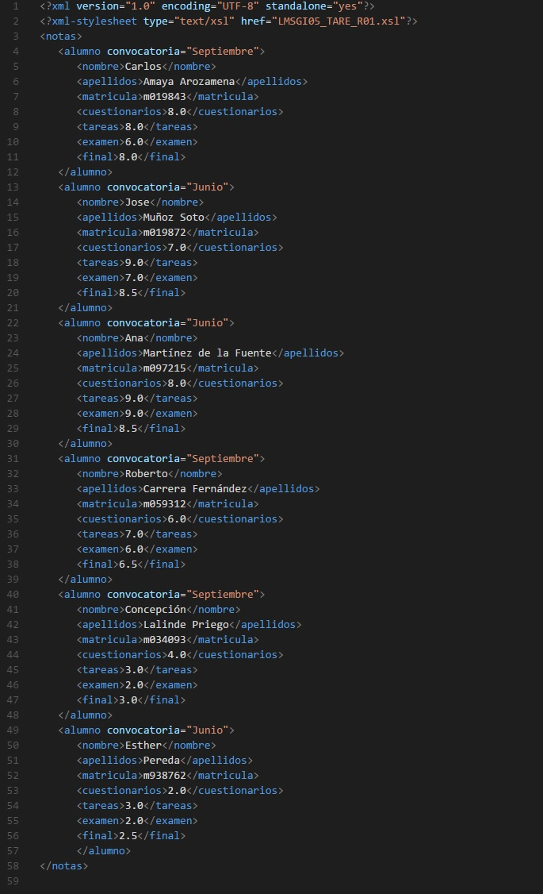
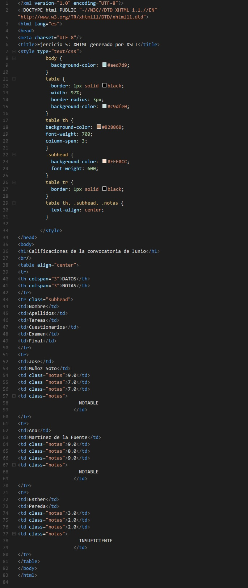

Dado el fichero LMSGI05_tarea.xml generar un documento XHTML que muestre una tabla según el formato de la siguiente plantilla (que se mantenga la plantilla del formato):

La nota final ha de estar en letra, es decir si es mayor o igual a 9 será SOBRESALIENTE, si es menor que 9 y mayor o igual a 7 será NOTABLE, si está entre 7 y 6, este último incluido será BIEN, si está entre 6 y 5 será SUFICIENTE y en otro caso INSUFICIENTE.
Solo se deben mostrar los datos correspondientes a la convocatoria de Junio.
Solución:
1. Creamos el fichero XSLT:

Captura del fichero XSLT
Se puede abrir el documento XLST usando este enlace.
2. Modificamos el archivo XML para que cargue la hoja de estilo XSLT:

Captura del fichero XML modificado
El archivo XML modificado está disponible a través de este enlace.
3. Generamos el archivo XHTML resultado utilizando XML Copy Editor:

Capture del documento XHTML resultado
Para acceder al archivo XHTML resultado, click este enlace.